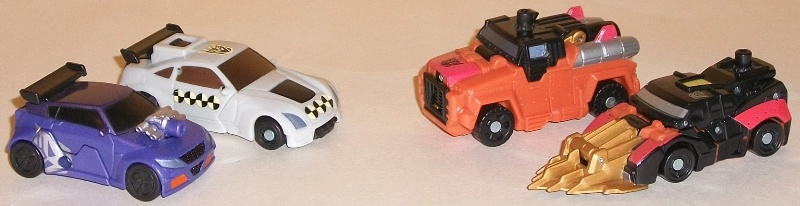
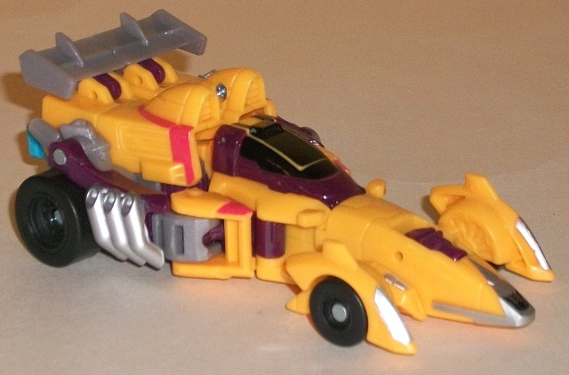
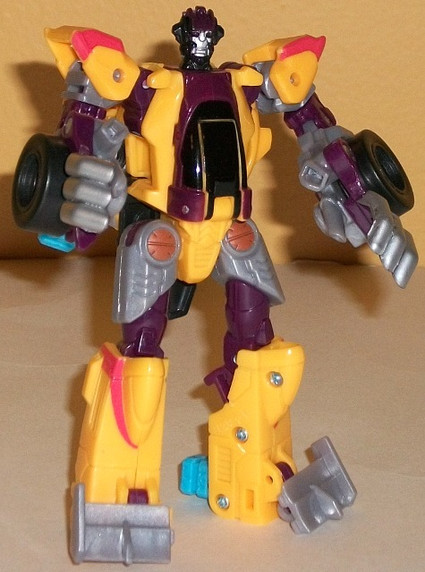
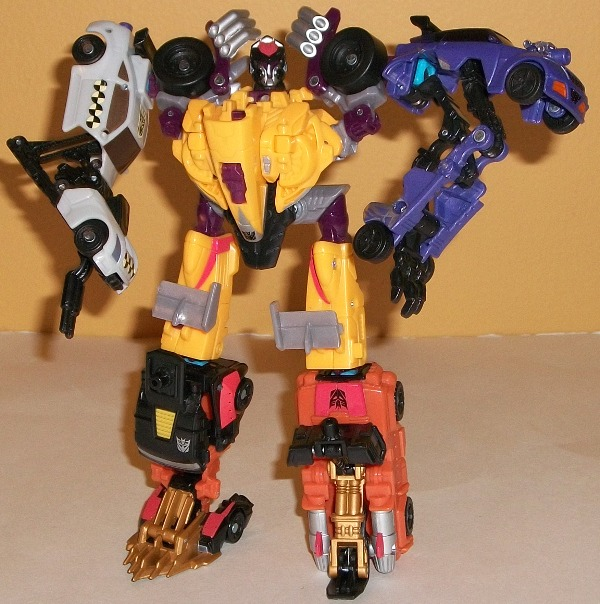

Spastic/Over-Run
w/ Stunticons
Spastic/Over-Run
w/ Stunticons
(NOTE: Because this set is composed of repaints,
this is not a full-blown review. This mainly covers any changes made to
the set and the color scheme, and merely compares it to the original versions
of these molds. For a review on the Destructicon limbs-- two of which are
repainted for this set-- check out the review of Mudslinger
here
.
For a review on the Rallybot limbs-- two of which are also repainted for
this set-- check out the review of Double Clutch
here
.
For a review on Leadfoot, the mold used for Spastic/Over-Run, go
here
.)
Stunticons

Allegiances
: Decepticons
Difficulty of Transformations
: Automatic
Color Schemes
: Grayish white, black,
metallic purplish blue, dull pumpkin orange, pale metallic copper-gold,
and some off-white, dull metallic brown, light metallic silvery blue, silver,
pale light red, and yellow
Individual Rating
: 6.7
The "arm drones" for
the Stunticons are taken from Double Clutch's Rallybots, and although both
share a few common black parts like the spoilers, arm parts, and tires,
their main color is completely different for each. One has a really attractive
shade of metallic purplish blue covering most of its car mode, and combined
with the black looks quite smooth. The necessary details are painted on
it as well, such as a large sideways Decepticon symbol near the rear wheels,
as well as painted headlights and exposed engine. The other Rally-Stunticon
is a rather blah grayish white. It's dull, but it looks a little more interesting
than a plain white, I suppose. What I DO like on this one are the dull
metallic brown windows, which contrast against the off-white quite well.
There's also some neat "crash test"-like paint apps on the front and hood,
which give this drone a bit more uniqueness beyond just being "another
sportscar". As for the two "leg drones", their molds have been taken from
Mudslinger's Destructicons. Although they obviously are vehicles of a different
sort than the two sportscars, it's easy to see how they could be "backup/support
vehicles" for stunt cars, so the drones actually all work together in a
weird sort of way. Both of the former Destructicons have similar color
schemes, the only major difference being that one is primarily black with
some orange and the other is primarily orange with some black. Regardless,
both of those colors go together quite well, and there are numerous paint
apps on both to keep the color schemes from getting too two-tone. The large
copper-gold front "wedge" on the mostly-black drone looks great, as do
the light red and yellow paint highlights. The silver used for a few parts
like the rocket engines on the mostly-orange drone also contrasts well
with the surrounding colors-- I particularly like it when the aforementioned
drone is in leg mode, as the silver and now-visible gold play off each
other quite nicely there.
No mold changes have
been made to the Stunticons.
The Stunticon drones
are a bit of a mixed bunch overall, though my overall opinion for them
rests slightly on the positive side. On one hand, out of the four of them,
three have superior color schemes to their original versions, I think (the
off-white "stunt" car being the sole exception). The two drones used from
the Destructicons are also fairly good leg drones too-- but on the other
hand, the drones used from the Rallybots make for rather weak arms (particularly
the off-white one).
Spastic/Over-Run



Allegiance
: Decepticon
Difficulty of Vehicle/Robot Transformation
:
Medium
Difficulty of Torso Transformation
:
Medium
Color Scheme
: "Cheese" yellow, milky
glittery gray, dark fuchsia, and some black, silver, light sky blue, and
light red
Individual Rating
: 8.7
Before I get on with
the toy review proper, a bit of a background explanation with this toy.
It originally was revealed to be called "Spastic", but unbeknownst to Hasbro,
in England that's a rather frowned-upon word (even though, in Hasbro's
defense, it wasn't going to be released in the U.K.). Thus there was a
last-minute change to the toy's name, naming it the rather generic "Over-Run"
instead. This name change occurred so late in the game that the boxes actually
had to have little "Over-Run" stickers placed over every mention of Spastic's
name, since the boxes had already been printed before the change. Because
Spastic is both the originally intended name for this toy AND I feel it's
a more unique name that better expresses the character's personality, for
simplicity's sake I'll simply be referring to this toy as Spastic for the
remainder of this review.
Even though he's named
Spastic, this toy is fairly obviously colored after the G1 Stunticon Drag
Strip, though like with many of the Power Core Combiners, I guess Spastic
is "another Stunticon" that's simply not part of the "main five". The main
color is a slightly orangish "cheese" yellow, with fuchsia and gray being
the secondary colors. The fuchsia really contrasts with the yellow quite
nicely, and provides a dark color foil to the rather bright shade of yellow
that Spastic has. The combiner ports are attached to fuchsia-colored parts,
which means that-- far from being eyesores, as they are in most PCCs--
the color of the ports actually blends in with their surrounding pieces
on this toy. The gray is... well... gray, but thankfully it doesn't fall
into the dull milky gray coloration that so many other Transformers have
these days; no, Spastic's gray is a bit darker than the gray on most TFs
and-- more importantly-- has a bit of glitter in the plastic, making the
gray look almost metallic. This little touch vastly improves how the gray
looks on the toy, and improves my opinion on the color from "meh, boring"
to "looks okay". I wish more Transformers with gray did this. There's also
a bit of black (mostly on the wheels and cockpit), and some silver and
dynamic-looking light red paint apps. Both paint apps accent the colors
nicely (the light red "speed lines" a little more than the silver), and
they're also spread out on the figure well enough that there's not too
large an area of any one color, which is always good.
No mold changes have
been made to Spastic.
Spastic is a pretty
nice "Decepticon-y" redeco of the Leadfoot mold, even if they both share
a shade of yellow/orange as their main color. He's a pretty good homage
to Drag Strip while still having a few unique color variations of his own.
Recommended over Leadfoot.
Spastic w/ Stunticons Bio
:
Spastic is impulsive, violent, and dangerously
unpredictable. He almost always operates alone, because most other Decepticons
are afraid to be anywhere near him. He does anything he can to aggravate
dangerous situations into total catastrophes, causing chaos and confusion
among ally and enemy alike.
Strength: 8.0
Intelligence: 8.0
Speed: 8.0
Endurance: 8.0
Rank: 7.0
Courage: 10.0
Fireblast: 8.0
Skill: 4.0
Reviews by Beastbot
Back to Power
Core Combiners Index